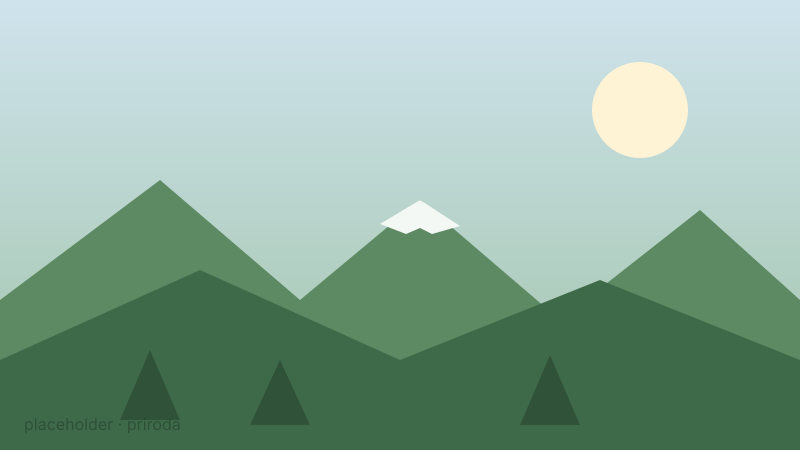
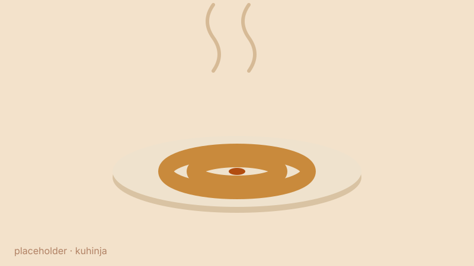
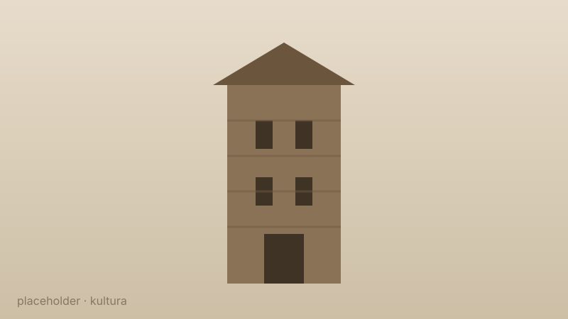
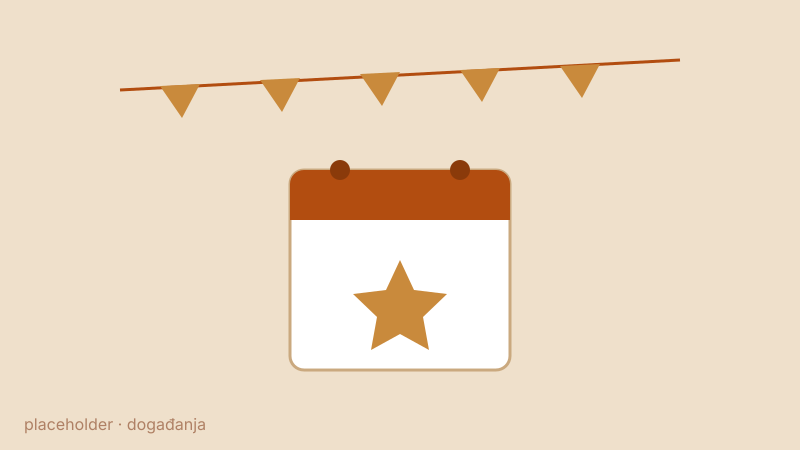
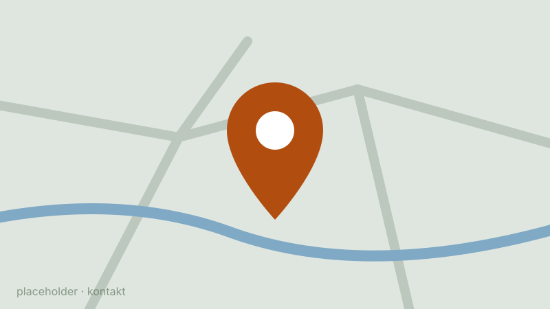

Planinski grad na sjeveru Crne Gore — gdje izvire Ibar, gdje miriše pita ispod sača, a Hajla čuva grad sa svojih 2.403 metra.
Počni istraživanjeFoto: Theresa Schmalenbach / Outdooractive
Dobro došli
Rožaje leže u dolini rijeke Ibar, okružene vijencima Hajle, Turjaka i Žljeba. Ovdje se susreću planinska priroda, bogata sandžačka kuhinja i vjekovno nasljeđe drvorezbarstva. Ovaj vodič te vodi kroz sve što grad nudi — odaberi gdje želiš da kreneš.

Vrh Hajla, izvor Ibra, planinske staze i čist vazduh na 1.000 m nadmorske visine.
Pogledaj prirodu →
Pita ispod sača, mantije, cicvara i domaći sir — i gdje sve to možeš probati.
Šta i gdje jesti →
Ganića kula, tradicija drvorezbarstva, džamije i običaji koji traju vjekovima.
Upoznaj nasljeđe →
Manifestacije kroz godinu, zimske radosti na snijegu i praktične informacije kako doći.
Vidi šta se dešava →
Korisni brojevi, turističke informacije i kako nas pronaći na karti.
Stupi u kontakt →Zašto baš ovdje
Planine preko 2.000 m, gusta četinarska šuma i izvori pitke vode nadomak grada.
Domaćinska kuhinja i ljudi koji goste dočekuju kao prijatelje — stara sandžačka tradicija.
Drvorezbarstvo, sevdah i stari zanati koji se i danas prenose s koljena na koljeno.